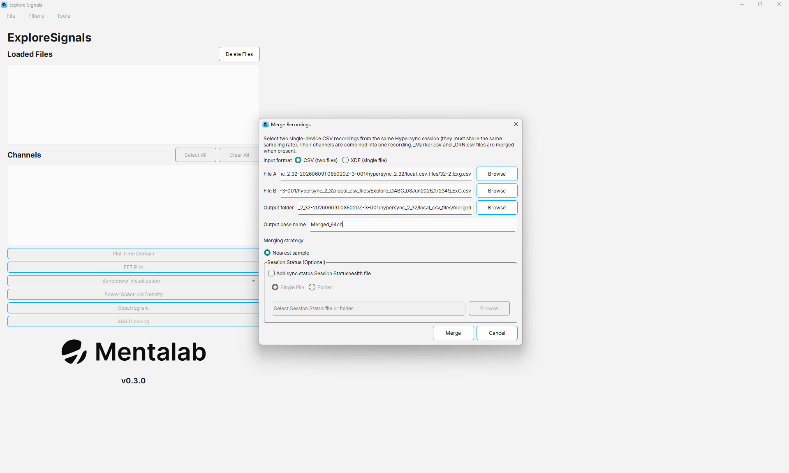
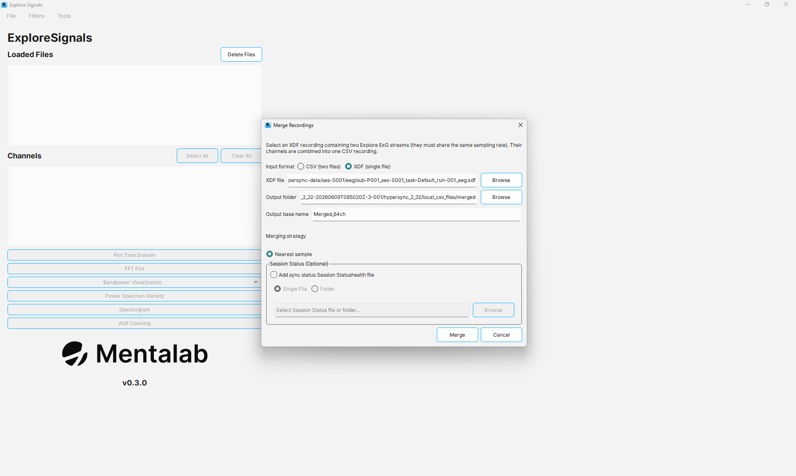
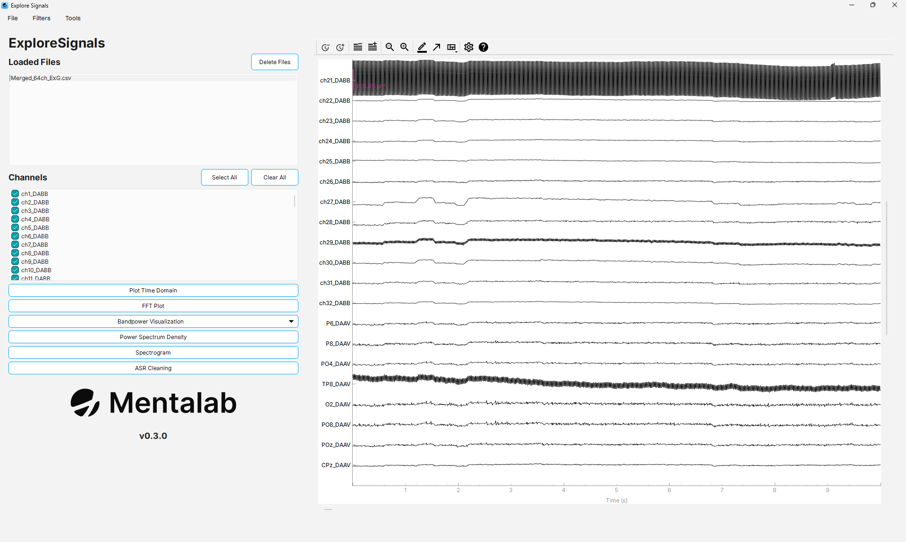

Merging two 32-channel devices into a 64-channel recording
Explore Signals can combine recordings from two Explore devices into a single recording. Two 32-channel Explore Pro devices recorded together produce one unified 64-channel file.
Merging is offline. You record with both devices as usual, then combine the resulting files afterwards.
| The two devices must be time-synchronized with Mentalab Hypersync during recording. Without it, each device timestamps its samples against its own independent clock, so Explore Signals has no common time base to align them on, and the merged file will not represent a single moment in time. |
Before you start
Check the following before merging:
-
Both devices were synchronized with Mentalab Hypersync for the whole session.
-
Both devices used the same sampling rate. Explore Signals refuses to merge recordings whose sampling rates differ.
-
The two recordings overlap in time. Only the overlapping period is merged. If they do not overlap at all, the merge fails.
-
You have the right files. Either the two
_ExG.csvrecordings, or a single.xdffile containing both devices' streams.
How the merge works
Explore Signals does not resample both recordings onto a new common clock. Instead:
-
It finds the window in which both recordings were running, and discards everything outside it.
-
It takes the first recording,
File A, and keeps its timestamps and samples exactly as they are. This becomes the time base for the merged file. -
For every sample time in
File A, it takes the sample fromFile Bwhose timestamp is closest. -
It stacks the two sets of channels into one file.
Two consequences are worth knowing:
-
File Ais preserved sample for sample.File Bis matched onto the sample times ofFile Aby nearest-neighbour selection, not interpolated, so each of its samples can shift by up to half a sample period. -
Which file you choose as
File Atherefore determines whose timestamps survive. If one device matters more for your analysis, or if one recording is cleaner, make that oneFile A.
Merging two CSV recordings
To merge two _ExG.csv recordings:
-
Navigate to:
File > Convert > Merge Recordings
-
Under
Input format, selectCSV (two files). -
Click Browse next to
File Aand select the first_ExG.csvfile. -
Click Browse next to
File Band select the second_ExG.csvfile. -
Click Browse next to
Output folderand choose where the merged files should be written. -
Enter an
Output base name. This is the name the merged files are built from. If you leave it empty,Mergedis used. -
Leave
Merging strategyset toNearest sample. -
Optionally add sync-status markers. See the section below.
-
Click Merge.
The Merge button stays disabled until the required fields are filled in. If a setting is not valid, the dialog shows the reason in red above the buttons.

File requirements
Both inputs must be ExG recordings, meaning files whose names end in _ExG.csv. Explore Signals rejects other files.
Explore Signals also reads the following files from the same folder, when they are present:
-
_Meta.csv— used to read the sampling rate. Without it, the sampling rate is estimated from the timestamps. -
_Marker.csv— event markers, merged into the output. -
_ORN.csv— motion sensor data, merged into the output.
For this reason, keep each recording together with its sibling files rather than moving the _ExG.csv file on its own.
Merging from an XDF recording
If you recorded both devices into a single .xdf file through LSL, select XDF (single file) under Input format. The dialog then asks for one XDF file instead of the two CSV files.
The file must contain exactly two Explore ExG streams. If it contains a different number, Explore Signals reports how many it found and stops.
The remaining settings work the same way, and the output is written as CSV files exactly as in the CSV workflow.

What the merge produces
Using the default output base name Merged, the merge writes:
| File | Contents |
|---|---|
|
The unified recording. One |
|
Metadata for the merged recording, including the sampling rate and the combined channel list. The |
|
Event markers from both recordings, restricted to the overlapping window. |
|
Motion sensor data from both devices. Written only when both inputs have an |
Channel names
Channels keep their original names with the device ID appended, so you can always tell which device a channel came from. Two 32-channel devices produce 32 columns carrying the first device’s ID, followed by 32 columns carrying the second device’s ID.
If both recordings come from the same device ID, Explore Signals appends _A and _B instead, so that the column names stay unique.
Markers are labelled the same way, with the device ID in front of the marker code.
Adding sync-status markers
Mentalab Hypersync records a Session Status file describing when your devices were synchronized during the session. Attaching it to the merge adds markers showing where the synchronization held and where it did not.
To add them, in the Session Status (Optional) section of the dialog:
-
Select the checkbox for adding sync status markers. The fields below it become available.
-
Choose
Single Fileif you want to select the Session Status file directly, orFolderto point at the folder containing it. -
Click Browse and select the file or folder.
Explore Signals then adds a marker to Merged_Marker.csv at each point where a device’s sync status changed:
-
Good Sync— the device was synchronized from this point on. -
Bad Sync— the device had drifted out of sync from this point on.
Each marker is labelled with its device ID, and only transitions inside the merged window are included. Adding markers does not shorten the recording.
Use these markers to find and exclude stretches where the two devices were not reliably aligned. This matters for a merged recording: if the devices drifted apart, channels from the two devices no longer describe the same moment in time.
Session Status files are named SessionStatus<date>_<time>.csv, or session_status_<date>_<time>.csv in older versions.
| If the Session Status file cannot be read, or contains no transitions inside the merged window, Explore Signals reports this and completes the merge without sync markers. The merged data itself is unaffected. |
Using the merged recording
The merged recording is an ordinary Explore Signals recording. You can load Merged_ExG.csv through File > Open and then visualize, filter, and analyze it like any other file.

To work with the recording in other software, export it to .bdf or convert it to an EEGLAB dataset. See the Usage page for both.
Troubleshooting
| Message or symptom | What to do |
|---|---|
Both files must have the same sampling rate |
The two devices recorded at different rates. Explore Signals cannot merge them. Re-record with matching sampling rates. |
The two recordings do not overlap in time |
The devices were not recording at the same time, or the files come from different sessions. Check that both files belong to the same Hypersync session. |
File A must be an ExG recording |
You selected a file that is not an |
Expected exactly 2 Explore ExG streams in the XDF |
The |
Could not determine sampling rate |
The |
No |
Motion data is merged only when both recordings have an |
The Merge button stays greyed out |
A required field is still empty. Check that both input files, the output folder, and the output base name are set. If sync-status markers are enabled, a Session Status file or folder is required too. |
The merged file is shorter than either recording |
This is expected. Only the window in which both devices were recording is kept. |
Limitations
-
Merging combines exactly two recordings. To combine more devices, merge in stages, using the output of one merge as an input to the next. Check the result carefully, because each stage aligns onto a new time base.
-
Inputs must be
.csvor.xdf. Recordings in.bdfor.edfcannot be merged directly. -
The merged output is always written as CSV files, regardless of the input format.
-
Samples from
File Bare matched by nearest neighbour rather than interpolated.Nearest sampleis currently the only merging strategy.
For more information or support, contact support@mentalab.com.